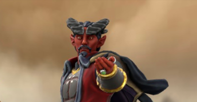

Daemon's Backstory
The tiefling warlock Daemon was a gladiator for the rich in hell and when he escaped he sought revenge on his captors. After deciding he wasn't quite ready, he set off to explore the world, vowing to train, explore and become as strong as he possibly could be. He would need all of this experience for his ultimate facedown against hell istelf
Fourteen Questions
- What’s your favourite meal?
- - Meat.
- What’s your favourite snack
- - Cheese.
- What’s your favourite alcoholic drink?
- - Vodka.
- What’s your favourite non-alcoholic drink?
- - Orange juice.
- Any hobbies or pass times?
- - Practice magic, hunting. Training.
- Are you a morning or night person?
- - I prefer the night.
- Any habits?
- - I have been known to stare at people. It is only so I can measure their strength.
- Preferred place to camp?
- - The forest.
- Ideal tavern?
- - Rowdy.
- First call when you reach a new town?
- - Visit the tavern.
- Any fears?
- - I prefer to stay away from cages. They bring back memories.
- What's your favourite colour?
- - Crimson red.
- What's your favourtite thing to fight?
- - Anyone that threatens me or my comrades.
- What's your end goal?
- - I want revenge against my captors.
Please note
He can be a little sensitive. He lived a hard life before he escaped. So don't bring him to prisons or around cages.